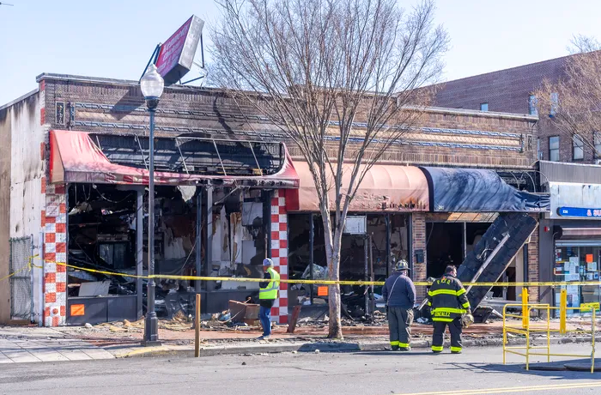

In Liberty Valley, the race for the House of Representatives is heating up in the 12th District, which is set to be a battleground in the upcoming election!

[Breaking] The Republican Party has confirmed Leo Davis as their nominee for the 12th district. Davis, a local entrepreneur known for his conservative values, has vowed to bring change to Washington. His nomination comes after a closely watched primary race that captivated the district's attention.


Daniel Johnson, the Democratic nominee for the 12th District, will hold his first rally since securing the nomination. Johnson, a local businessman, has pledged to be a voice for progress in Congress, championing policies that reflect liberal values.

Introducing our 2024 Fall Collection.
Tragedy narrowly avoided last night as a fire engulfed the beloved local landmark, Joe's Chicken Shack. Thankfully, no injuries were reported as the fire broke out overnight when the restaurant was closed. The community has already started rallying support for rebuilding and bringing back Liberty Valley’s most acclaimed fried chicken!
What happens when you don't suspend a student. A case study. About 15/16 months ago. A student is chronically disruptive, and is intentionally miserable to his teacher. The teacher is at her wits end, and meetings are held to figure it all out. Here's what happened
What happens when you don't suspend a student. A case study. About 15/16 months ago. A student is chronically disruptive, and is intentionally miserable to his teacher. The teacher is at her wits end, and meetings are held to figure it all out. Here's what happened